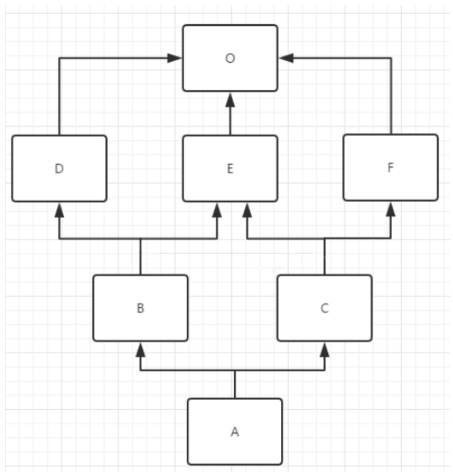

Python中的继承
面向对象的继承
面向对象三大特性
封装 根据 职责 将 属性 和 方法 封装 到一个抽象的 类 中
继承 实现代码的重用，相同的代码不需要重复的编写
多态 不同的对象调用相同的方法，产生不同的执行结果，增加代码的灵活度
不用继承创建对象
1 | |
使用继承的方式
1 | |
**继承的概念：**子类 拥有 父类 的所有 方法 和 属性
继承的优点也是显而易见的：
增加了类的耦合性（耦合性不宜多，宜精）。
减少了重复代码。
使得代码更加规范化，合理化。
继承的分类
上面的那个例子，涉及到的专业术语：
Dog 类是 Animal 类的子类， Animal 类是 Dog 类的父类， Dog 类从 Animal 类继承
Dog 类是 Animal 类的派生类， Animal 类是 Dog 类的基类， Dog 类从 Animal 类派生
继承：可以分单继承，多继承。
python3x版本中只有一种类：
python3中使⽤的都是新式类. 如果基类谁都不继承. 那这个类会默认继承 object
单继承
类名，对象执行父类方法
1 | |
执行顺序
1 | |
同时执行类以及父类方法
方法一：如果想执行父类的func方法，这个方法并且子类中引用，那么就在子类的方法中写上：父 类.func(对象,其他参数)
1 | |
方法二：利用super，super().func(参数)
1 | |
单继承练习题
1 | |
1 | |
1 | |
1 | |
1 | |
方法的重写
如果在开发中，父类的方法实现 和 子类的方法实现，完全不同
就可以使用 覆盖 的方式，在子类中 重新编写 父类的方法实现
具体的实现方式，就相当于在 子类中 定义了一个 和父类同名的方法并且实现
重写之后，在运行时，只会调用 子类中重写的方法，而不再会调用 父类封装的方法
对父类方法进行 扩展
如果在开发中，子类的方法实现中包含父类的方法实现
- 父类原本封装的方法实现 是 子类方法的一部分
就可以使用扩展的方式
在子类中 重写 父类的方法
在需要的位置使用
super().父类方法来调用父类方法的执行代码其他的位置针对子类的需求，编写 子类特有的代码实现
关于 super
在 Python 中 super 是一个 特殊的类
super() 就是使用 super 类创建出来的对象
最常 使用的场景就是在 重写父类方法时，调用 在父类中封装的方法实现
调用父类方法的另外一种方式（知道）
在 Python 2.x 时，如果需要调用父类的方法，还可以使用以下方式：
1 | |
这种方式，目前在 Python 3.x 还支持这种方式
这种方法 不推荐使用，因为一旦 父类发生变化，方法调用位置的 类名 同样需要修改
提示
在开发时， 父类名 和 super() 两种方式不要混用
如果使用当前子类名调用方法，会形成递归调用，出现死循环
父类的 私有属性 和 私有方法
子类对象 不能 在自己的方法内部，直接 访问 父类的 私有属性 或 私有方法
子类对象 可以通过 父类 的 公有方法 间接 访问到 私有属性 或 私有方法
子类对象 不能 在自己的方法内部，直接 访问 父类的 私有属性 或 私有方法
子类对象 可以通过 父类 的 公有方法 间接 访问到 私有属性 或 私有方法
私有属性、方法 是对象的隐私，不对外公开，外界 以及 子类 都不能直接访问
私有属性、方法 通常用于做一些内部的事情
B 的对象不能直接访问 __num2 属性
B 的对象不能在 demo 方法内访问 __num2 属性
B 的对象可以在 demo 方法内，调用父类的 test 方法
父类的 test 方法内部，能够访问 __num2 属性和 __test 方法
1 | |
多继承
概念
子类 可以拥有 多个父类，并且具有 所有父类 的 属性 和 方法
例如：孩子 会继承自己 父亲 和 母亲 的 特性

语法
1 | |
问题的提出
如果 不同的父类 中存在 同名的方法，子类对象 在调用方法时，会调用 哪一个父类中的方法呢？
提示：开发时，应该尽量避免这种容易产生混淆的情况！ —— 如果 父类之间 存在 同名的属性或者方法，应该 尽量避免使用多继承
1 | |
经典类的多继承
1 | |
画图
在经典类中采⽤的是深度优先，遍历⽅案. 什么是深度优先. 就是⼀条路走到头. 然后再回来. 继续找下⼀ 个.
类的MRO(method resolution order): Foo-> H -> G -> F -> E -> D -> B -> A -> C.
新式类的多继承
mro序列
MRO是一个有序列表L，在类被创建时就计算出来。
通用计算公式为：
1 | |
如果继承至一个基类：class B(A)
这时B的mro序列为
1 | |
如果继承至多个基类：class B(A1, A2, A3 …)
这时B的mro序列
1 | |
计算结果为列表，列表中至少有一个元素即类自己，如上述示例[A1,A2,A3]。merge操作是C3算法的核心。
表头和表尾
表头：列表的第一个元素
表尾：列表中表头以外的元素集合（可以为空）
示例：列表：[A, B, C] 表头是A，表尾是B和C
列表之间的+操作
[A] + [B] = [A, B]
merge操作示例：
如计算merge( [E,O], [C,E,F,O], [C] )
有三个列表 ： ① ② ③
1 | |

计算mro(A)方式：
1 | |
python面向对象的三大特性：继承，封装，多态
封装: 把很多数据封装到⼀个对象中. 把固定功能的代码封装到⼀个代码块, 函数, 对象, 打包成模块. 这都属于封装的思想. 具体的情况具体分析. 比如. 你写了⼀个很⽜B的函数. 那这个也可以被称为封 装. 在⾯向对象思想中. 是把⼀些看似⽆关紧要的内容组合到⼀起统⼀进⾏存储和使⽤. 这就是封装.
继承: ⼦类可以⾃动拥有⽗类中除了私有属性外的其他所有内容. 说⽩了, ⼉⼦可以随便⽤爹的东⻄. 但是朋友们, ⼀定要认清楚⼀个事情. 必须先有爹, 后有⼉⼦. 顺序不能乱, 在python中实现继承非常 简单. 在声明类的时候, 在类名后⾯添加⼀个⼩括号,就可以完成继承关系. 那么什么情况可以使⽤继 承呢? 单纯的从代码层⾯上来看. 两个类具有相同的功能或者特征的时候. 可以采⽤继承的形式. 提取 ⼀个⽗类, 这个⽗类中编写着两个类相同的部分. 然后两个类分别取继承这个类就可以了. 这样写的 好处是我们可以避免写很多重复的功能和代码. 如果从语义中去分析的话. 会简单很多. 如果语境中 出现了x是⼀种y. 这时, y是⼀种泛化的概念. x比y更加具体. 那这时x就是y的⼦类. 比如. 猫是⼀种动 物. 猫继承动物. 动物能动. 猫也能动. 这时猫在创建的时候就有了动物的"动"这个属性. 再比如, ⽩骨 精是⼀个妖怪. 妖怪天⽣就有⼀个比较不好的功能叫"吃⼈", ⽩骨精⼀出⽣就知道如何"吃⼈". 此时 ⽩骨精继承妖怪.
多态: 同⼀个对象, 多种形态. 这个在python中其实是很不容易说明⽩的. 因为我们⼀直在⽤. 只是没 有具体的说. 比如. 我们创建⼀个变量a = 10 , 我们知道此时a是整数类型. 但是我们可以通过程序让a = “hello”, 这时, a⼜变成了字符串类型. 这是我们都知道的. 但是, 我要告诉你的是. 这个就是多态性. 同⼀个变量a可以是多种形态。